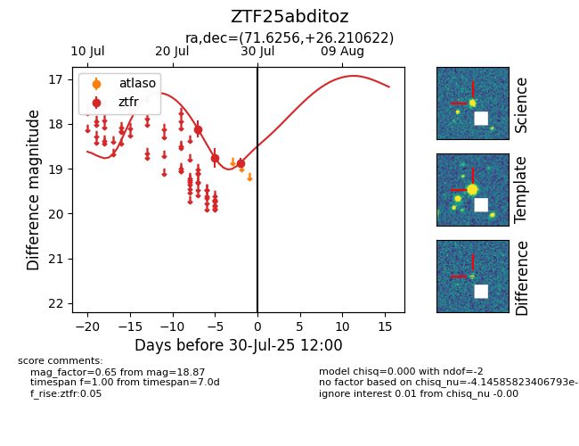

Target ZTF25abditoz at 2025-07-30 12:00, see:
FINK: fink-portal.org/ZTF25abditoz
Lasair: lasair-ztf.lsst.ac.uk/objects/ZTF25abditoz
ALeRCE: alerce.online/object/ZTF25abditoz
alt names
ZTF25abditoz (ztf,fink)
coordinates:
equatorial (ra, dec) = (71.6256,+26.21062)
galactic (l, b) = (174.6612,-12.27714)
photometry
last ztfr=18.87
3 ztfr detections
